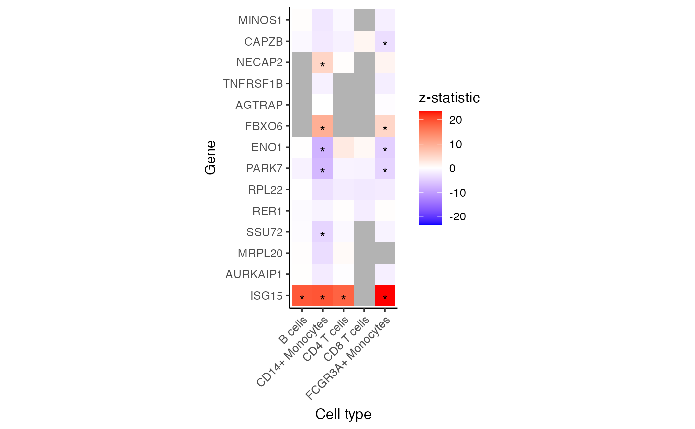

Heatmap of genes and assays
Usage
plotGeneHeatmap(
x,
coef,
genes,
assays = assayNames(x),
zmax = NULL,
transpose = FALSE
)
# S4 method for class 'dreamletResult'
plotGeneHeatmap(
x,
coef,
genes,
assays = assayNames(x),
zmax = NULL,
transpose = FALSE
)Arguments
- x
A
dreamletResultobject- coef
column number or column name specifying which coefficient or contrast of the linear model is of interest.
- genes
array of genes to include in plot
- assays
array of assay names to include in analysis. Defaults to
assayNames(x)- zmax
maximum z.std value
- transpose
(default: FALSE) Use `coord_flip()` to flip axies
Examples
library(muscat)
library(SingleCellExperiment)
data(example_sce)
# create pseudobulk for each sample and cell cluster
pb <- aggregateToPseudoBulk(example_sce,
assay = "counts",
cluster_id = "cluster_id",
sample_id = "sample_id",
verbose = FALSE
)
# voom-style normalization
res.proc <- processAssays(pb, ~group_id)
#> B cells...
#> 0.2 secs
#> CD14+ Monocytes...
#> 0.3 secs
#> CD4 T cells...
#> 0.23 secs
#> CD8 T cells...
#> 0.13 secs
#> FCGR3A+ Monocytes...
#> 0.27 secs
# Differential expression analysis within each assay,
# evaluated on the voom normalized data
res.dl <- dreamlet(res.proc, ~group_id)
#> B cells...
#> 0.2 secs
#> CD14+ Monocytes...
#> 0.26 secs
#> CD4 T cells...
#> 0.2 secs
#> CD8 T cells...
#> 0.13 secs
#> FCGR3A+ Monocytes...
#> 0.24 secs
# Heatmap for specified subset of genes
plotGeneHeatmap(res.dl, coef = "group_idstim", genes = rownames(pb)[1:15])
#> Warning: Removed 17 rows containing missing values or values outside the scale range
#> (`geom_text()`).
